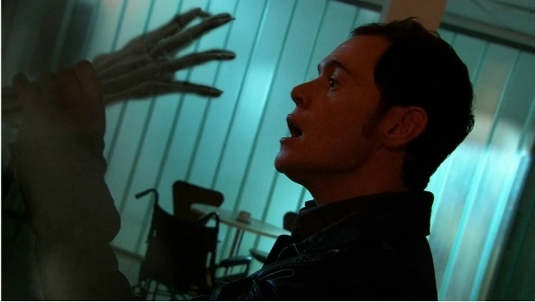

Эра Десятого Доктора
<<< НАЗАД ||| 7. Ходячий мертвец ||| ДАЛЬШЕ >>>
MVO [Sony Sci-Fi], MVO [ТВ-3], MVO [BMWmaximus]
+ Original [ENG]
Субтитры: Русские и Английские
 | Весь 2-й сезон (13 серий) |
Dead Man Walking
Дата выхода: 20 февраля 2008
Формат: 50-минутный эпизод
| Варианты озвучек: | * Разные: смотрите по инструкции |
|---|---|
| Скачивание и просмотр: |
Используя таинственную воскрешающую перчатку, Джек решает на пару минут вернуть Оуэна к жизни, чтобы проститься с ним. Однако что-то идёт не так, и Оуэн продолжает жить даже без контакта перчатки. Никто не подозревает, что вместе с Оуэном с того света вернулось что-то поистине ужасающее…

